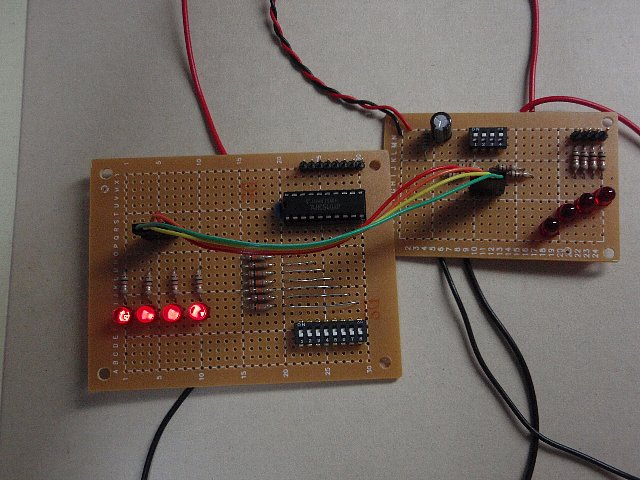

カテゴリ: 読書
- [ Prev ]
- [ Next ]
- [ 読書メモ/「CPUの創りかた」 ]
今日は
- 部品の購入
- ウォーミングアップ：IOポート, 人力クロック, 人力ROM モジュールの作成
を終えました。
お昼までは秋葉原に出向いて、千石電商でゴソゴソパーツ集めしてました。
お昼ごはん食べてお家に帰ったら、久しぶりに半田ごて取り出してはじめました。
買ってきた部品とか、以前電子工作やってたときに買い置きしていた余剰パーツとか集めて、とりあえず「CPUの創りかた」手抜き版の部品一式です。
このほかにも、当然工具類としてニッパー、ラジオペンチ、ワイヤストリッパー、さらに何種類かの配線材が控えています。
電源＋I/Oポートの作成
最初に作るモジュールですが、半田ごて握るのが久しぶりなので、ウォーミングアップを兼ねて比較的難易度の低い部分にしました。つまりICの数が少ない＝配線が少なくて、回路図から実体配線図をイメージしやすいモジュールを作ることにしました。
ということで、電源＋I/Oポートを作ってみました。これなら、無理なく小さめの穴あき基盤に収まります。
で、15:40分ごろの撮影ですが、無事、出力ポートと入力ポートの動作確認ができました。入力ポートをそのまま出力ポートにつなげることで、簡単に確認できます。
人力クロックの作成
まだ気力に余裕がありますので、次に簡単そうなモジュールとして人力クロック（書籍のクロック・リセット回路から発振回路を除いたもの）モジュールを作ってみます。
実体配線をイメージするときのパーツの間取りで少し悩みましたが、とりあえず抵抗をポチポチ基盤に差し込んでみて、ICソケットも置いてみて感覚を掴めたら、適当に半田付けをはじめてしまいます。
とりあえず抵抗なら失敗してもなんとかなるので、抵抗だけ半田付けした後、それに併せて他の部品とか配線をつなげていった感じです。
あ、もちろん、半田付けは高さが低い部品からはじめてます。
ということで、無事人力クロックとリセット回路が出来上がりました。
リセットの反応が遅めなので（パソコンのように即座にリセット、みたいな感じではないです。アナログメーターだとよく分かりますが、１～２秒押し続けて反応が現れます）、「あれ？反応しないな、ミスった？」と焦ったりしましたが、最終的に一通り動きました。
この時点で18:00でした。
人力ROMモジュールの作成
まだ何とか気力に余裕が残ってましたので、人力ROMモジュールに手を出してみました。
・・・いやー、これ、マジで人力ROMまで機能落として正解でした。
データ線8本とはいえ、コネクタと74HC540の間、74HC540とDIPスイッチの間、さらに10K抵抗の接続、ってだけでも、かなり神経使いました。あと、部品の配置が・・・本職じゃないので、なかなかすんなりイメージが湧かず、半田付けする前に、部品を置いて試行錯誤しました。書籍みたいに16個配置、だけじゃなく、「とりあえず今は1-2個にしとくけど、将来16個並べられるように」配置すると来た日には・・・配置だけで丸一日取られそうです。
まぁ世の中には回路図入力しただけで実体配線のパターンを生成してくれる便利なソフトもあるようですが。
ただし今回はパターンが印刷されたプリント基板を使うわけじゃないので、その助けも使えません。
そもそもそんな本格ソフト持ち出すほどの代物でもありませんし。
とまれ、動作確認成功の様子です。まず「人力アドレスライン目視」機能です。上で作成した入力ポートをアドレスラインにつなげてLEDを光らせて確認してます。

次にROM・・・要するにDIPスイッチの配線ですが、データバス8本、アドレスバス4本、ということでデータバスを4本4本に分けてそれぞれアドレスバスに接続して確認してます。
左半分：
大体終わったのが20:30でした。
最後に、今日作ったモジュールの写真を載せて今日の分は終わりです。
- [ Prev ]
- [ Next ]
- [ Up ]
- [ 読書メモ/「CPUの創りかた」 ]